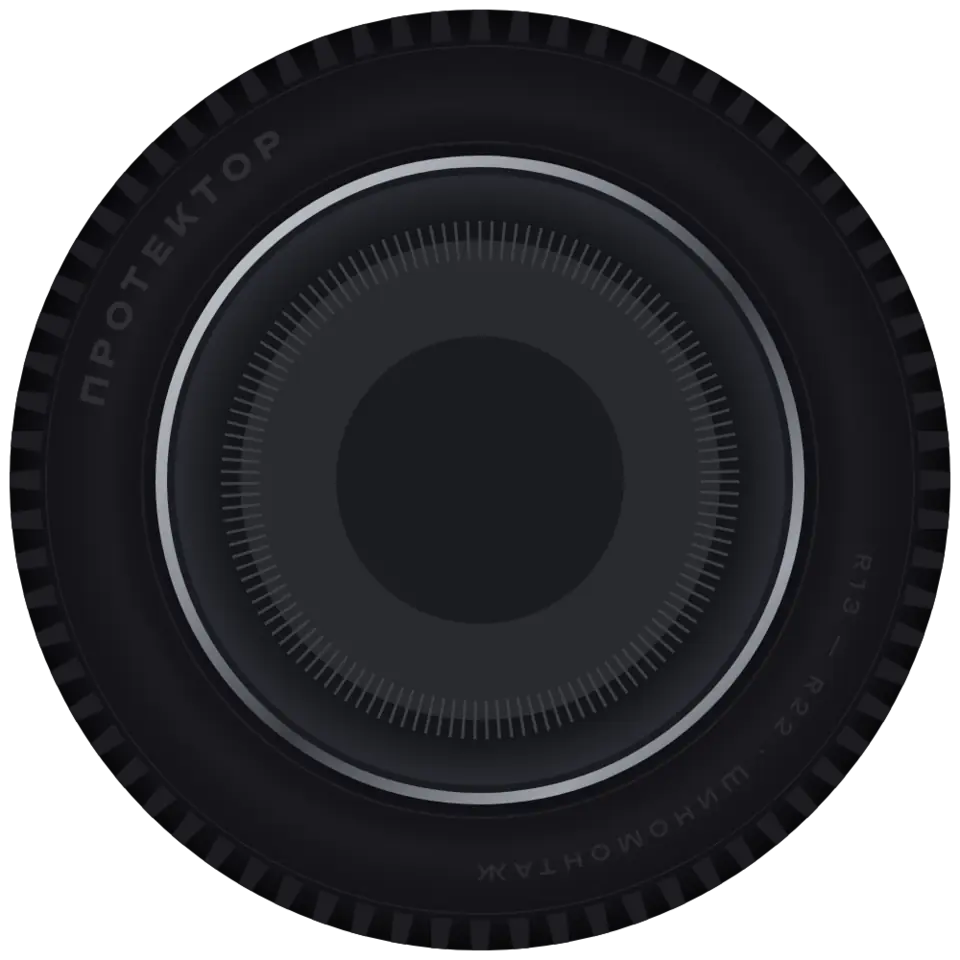
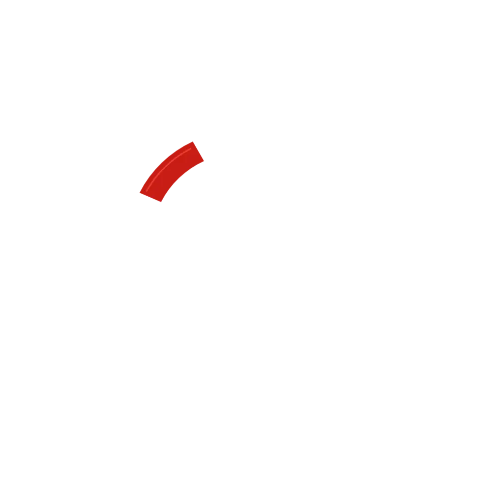
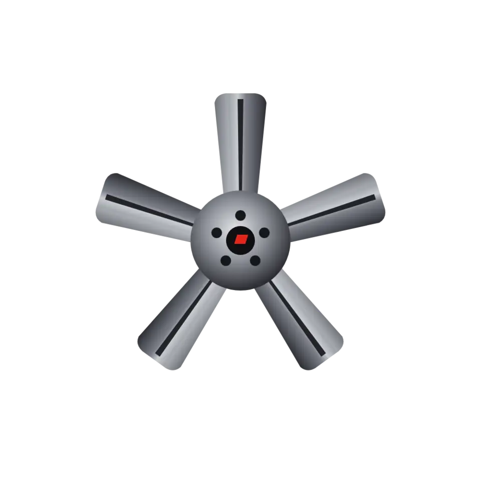

1
Колесо в разборе
колесо раскладывается на слои,
к каждой части — что мы гарантируем
При прокрутке колесо «разбирается» на шину, суппорт и диск — как на техническом чертежеОт каждой части тянется выноска: шина — порезы и проколы, диск — правка без царапин, внутри — азот и балансировка. Самое эффектное из всех.
Гарантии
Колесо вернётся целым



ДИСК
Без царапинПластиковые насадки на станке, металл не касается ободаПОСЛЕ ЯМЫ
Правим литые дискиПосле ям и бордюровШИНА
Ремонт проколов и порезовНа прокол — гарантия 12 месяцевВНУТРИ
Азот в шины бесплатноДавление держится дольшеСБОРКА
Финишная балансировкаПрямо на машине, если бьёт руль 2
Фото из мастерской
гарантии на настоящих
фото работы
Журнальная сетка: красная плитка «12 месяцев» и фото из мастерской с подписямиЖивые чёрно-белые кадры работы вместо иконок — выглядит дорого и честно. При наведении фото слегка приближается.
Колесо вернётся
целым
Шесть вещей, которые мы делаем, чтобы колесо уехало таким же, каким приехало.
Главная гарантия
12
месяцев
на ремонт прокола: начнёт спускать — переделаем бесплатно
Правим литые дискипосле ям и бордюров
Финишная балансировкапрямо на автомобиле
Ремонт боковых порезовне только проколов
Азотбесплатно
Кофепока ждёте
3
Гарантийный талон
гарантия как настоящий
документ с печатью
Светлый гарантийный талон с красной печатью «12 месяцев» на тёмном фонеЕдинственный светлый элемент на тёмном сайте — сразу притягивает взгляд. В талоне: что покрыто гарантией и как ей воспользоваться. Справа колесо и остальные плюсы.
Гарантии
Колесо
вернётся
целым
ПРОТЕКТОР · ГАРАНТИЙНЫЙ ТАЛОН
Гарантия на ремонт
прокола
- Колесо начало спускать в месте ремонта — переделаем бесплатно
- Достаточно назвать телефон, на который была запись
- Боковые порезы ремонтируем тоже — о гарантии скажем после осмотра
4
Колесо вместо «О»
огромный заголовок,
колесо — буква «О»
Заголовок на весь экран, вместо буквы «О» в «КОЛЕСО» крутится настоящее колесоНиже бегущая строка из гарантий, как лента протектора, и три коротких факта. Дерзко и запоминается.
к

лес
вернётся целым
12 месяцев на проколфинишная балансировкаправим литые дискиазот бесплатноремонт порезовкофе пока ждёте
Без царапинНа станке пластиковые насадки — металл не касается обода.
12 месяцевГарантия на ремонт прокола. Достаточно назвать телефон.
До сезонаХраним комплект, каждое колесо подписано.
5
Сцена
одна гарантия за раз,
крупно, как кадры фильма
Тёмная сцена с красным светом: колесо справа, слева одна гарантия крупным текстомПри прокрутке гарантии сменяют друг друга, как титры: 01, 02, 03… Колесо поворачивается на каждой. Внизу полоска прогресса.
03 / 06
Правим
литые диски
Поймали яму или бордюр — выправим диск, чтобы колесо снова держало давление и не било в руль.
листайте — следующая гарантия
Как выбирать: напишите номер, можно смешать. Соберу только для компьютера, телефон не трогаю.